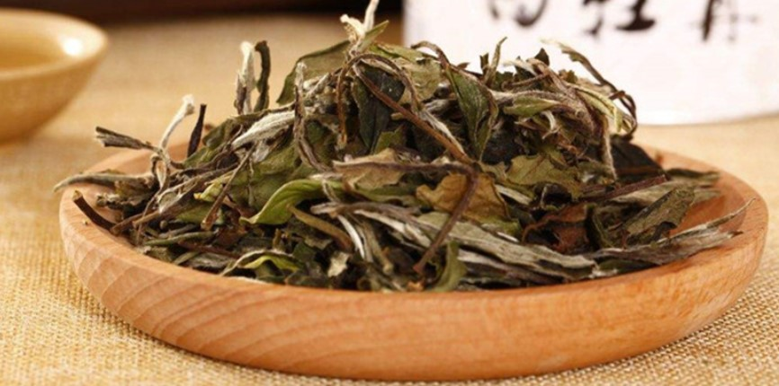
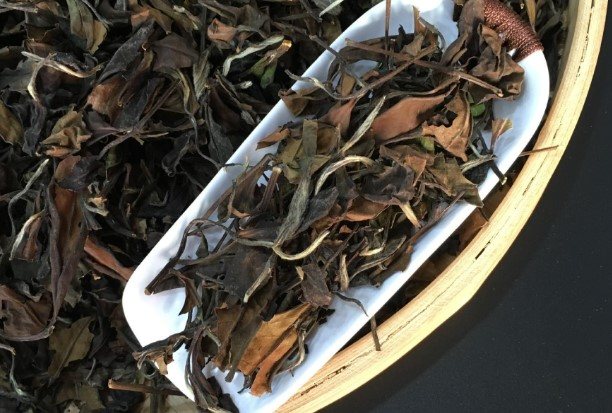

寿眉
寿眉，乃以福鼎大白、福鼎白茶树制成的白茶。寿眉叶张稍肥嫩，芽叶连枝，无老梗，叶整卷如眉，香气清纯。其中用茶芽叶制成的毛茶称为“小白”，以区别于福鼎大白茶、政和大白茶茶树芽叶制成的“大白”毛茶。
菜茶茶芽曾用以制造白毫银针，其后改用大白制白毫银针和白牡丹，而小白则用以制造贡眉。
产地分布
寿眉主产于福建省宁德市的柘荣县和福鼎市管阳镇、磻溪镇、点头镇，南平市的政和县、建阳市、松溪县等，产量占白茶总产量一半以上。制造贡眉原料采摘标准为一芽二叶至一芽二、三叶。要求含有嫩芽、壮芽。初精制工艺与白牡丹基本相同。
品质特征
优质寿眉毫心显而多，色泽翠绿，汤色橙黄或深黄，叶底匀整、柔软、鲜亮，叶张主脉迎光透视呈红色，味醇爽，香鲜纯。其采摘标准为一芽二叶至一芽二、三叶，要求含有白毫。优质寿眉色泽翠绿，汤色橙黄。